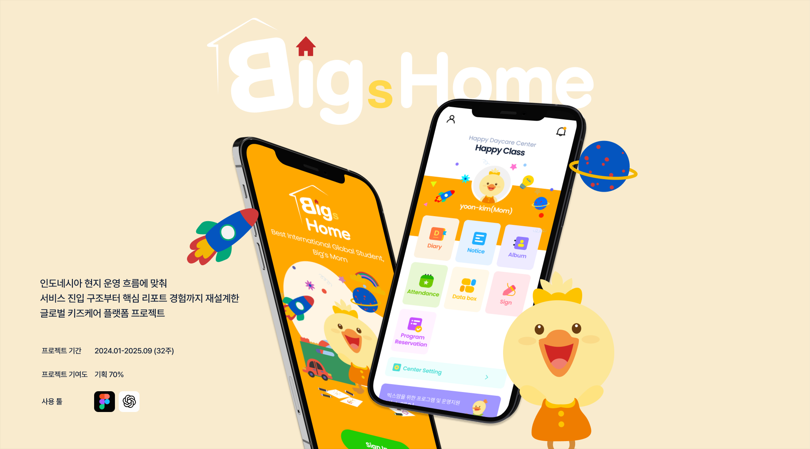
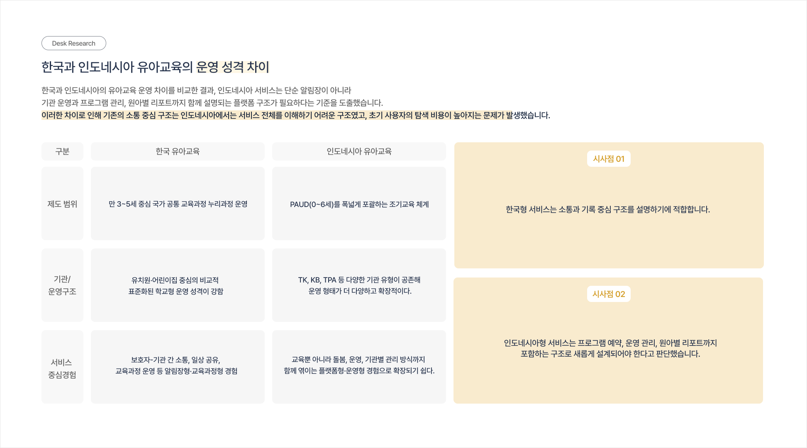
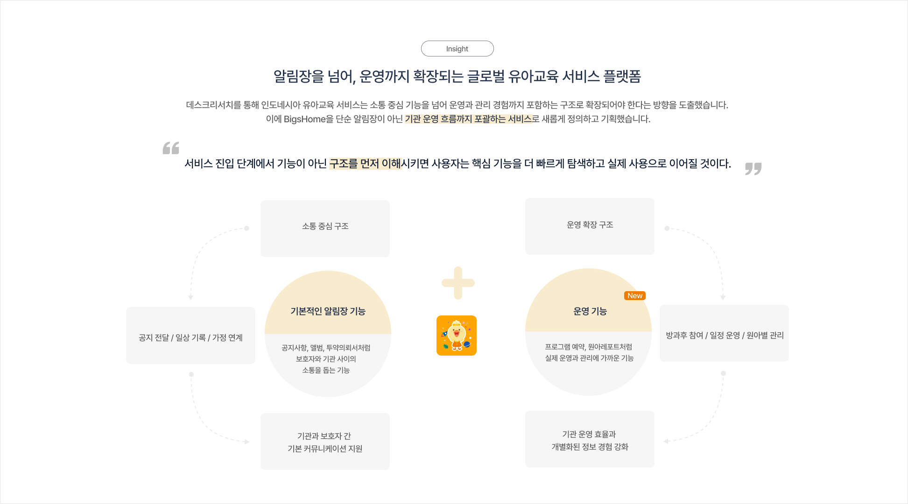

Project Detail View
프로젝트 자세히 보기







대표페이지 오픈부터 핵심 앱 경험 기획까지, 인도네시아 현지 운영 맥락을 반영한 글로벌 키즈케어 플랫폼 프로젝트입니다. 인도네시아 현지 기관은 서비스의 기능과 구조를 한 번에 이해하기 어려워 초기 도입 판단까지 이어지지 않는 문제가 있었습니다.
이러한 문제를 정의하고, 현지 기관이 서비스를 처음 접했을 때 무엇을 하는 서비스인지, 어떤 기능부터 사용해야 하는지 '이해 → 탐색 → 사용' 흐름으로 구조를 설계했습니다. PM 1명·기획 2명·개발 3명·디자인 2명으로 구성된 팀에서 기여도 70%로 대표페이지 정보 구조와 서비스 진입 흐름, 원아레포트 경험까지 확장 구조를 직접 기획했습니다.
인도네시아는 PAUD(0~6세)를 포괄하는 조기교육 체계로, TK·KB·TPA 등 다양한 기관 유형이 공존합니다. 한국형 소통 중심 구조는 인도네시아에서 서비스 전체를 이해하기 어려운 구조였고, 초기 사용자의 탐색 비용이 높아지는 문제가 발생했습니다.
단순 알림장이 아닌 기관 운영, 프로그램 관리, 원아별 리포트까지 포함하는 플랫폼형 경험이 필요하다는 기준을 데스크 리서치를 통해 도출했고, 이를 기반으로 BigHome을 새롭게 정의하고 기획했습니다.
현지 맥락 파악 → 대표페이지 선행 기획 → IA·플로우 설계 → 화면기획 → 개발 및 QA → 기능 확장의 순서로 진행했습니다.
인도네시아 현지 솔루션 요청을 바탕으로 1차 오픈 범위와 핵심 기능 방향을 설정했습니다. 국내 서비스 구조를 그대로 적용하지 않고, 현지 기관 운영 방식에 맞는 서비스 방향을 새롭게 정의했습니다.
기능 개발 이전에 서비스 구조를 이해시키는 것이 도입 여부를 결정하는 핵심이라 판단해 대표페이지를 선행 기획·오픈했습니다. 사용자가 서비스를 처음 접하는 진입 접점을 먼저 구축했습니다.
대표페이지와 병행해 카테고리 IA와 주요 기능 플로우를 설계하며 확장 구조를 구축했습니다. 개발·QA를 거쳐 1차 오픈 후 원아레포트 등 현지 요구 기반 기능을 추가 기획했습니다.
OKR 기반 성과 검증 결과 기준. 해외 현지 키즈케어 서비스 발명으로 다수의 현지 언론에 소개됐습니다.
핵심 과업 도달률 100% 확보
주요 기능 탐색 단계 41% 감소
운영 적합성 목표 대비 133% 달성
'현지화'는 단순한 번역이 아니라 사용 구조 자체를 현지 맥락에 맞게 재정의하는 것임을 배웠습니다. 기능 개발 이전에 서비스 구조를 이해시키는 대표페이지를 선행한 것이 도입 결정에 직접적인 영향을 미쳤고, 서비스 진입 흐름 설계가 얼마나 중요한지를 실제 수치로 확인할 수 있었습니다.
또한 복잡한 운영 시나리오를 단순한 화면 흐름으로 풀어내는 과정에서, 기획자가 서비스의 비즈니스 구조와 현지 운영 맥락을 깊이 이해해야만 사용자에게 올바른 구조를 제안할 수 있다는 것을 체감한 프로젝트였습니다.
Project Detail View


